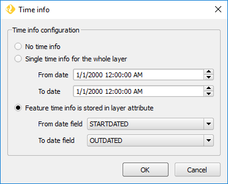

Usage¶
This page will detail how to use the Web App Builder (WAB). For more usage examples, please see the “Working with the Web App Builder plugin” tutorial in Desktop Learning Center.
The Web App Builder is started from the menu item.
Menu path to launch the Web App Builder
Once launched, the main dialog of the Web App Builder looks like this:
Web App Builder main dialog - Description tab
At the bottom of the Web App Builder main dialog, there are five buttons that allow you to manage your app definitions, as shown below:

App definition and management buttons
| Button | Description |
|---|---|
| Open | Opens an existing app definitions file (.appdef) |
| Save | Saves the current app definitions to a file (.appdef) |
| Help | Brings up a the help dialog |
| Create app | Generates the complete app |
| Preview | Shows a preview of the app |
To create a web app, you must define its characteristics using the definitions available in each dialog’s tab and then press the Preview or Create App button.
Note
The Preview button will create the web app in a temporary folder and open your default internet browser to load it. This preview web app is based on a precompiled version of Web SDK and is not ready for production, but only for preview and debug purposes.
The Create App button will create a web app using Boundless WebSDK. The web app is stored in a folder specified by the user. Boundless WebSDK is offered as a service to Boundless customers, so you will need your Boundless Connect credentials. You will be prompted to enter them if it is the first time that you WebSDK in the current QGIS session.
The following sections will explain each tab in the Web App Builder dialog, its contents and options.
Description¶
The elements in the Description tab control the basic structure of the app page.
Set the title of the project in the App Title box. In case you want to add a logo along with your title, enter the path to the logo image file in the Logo image box.
From the available themes, select the one you want to use for your app. A theme defines how the elements of the web app (map, widgets, menus, etc.) will appear visually.
There are two themes: Basic and Tabbed. .. TODO:: Explain differences betwen the two options
QGIS Layers¶
This tab you should select which layers from your existing QGIS project that you would like to add to your web app.
Vector layer will be exported to a GeoJSON file and the app will use it directly. The file will be saved in the output folder in which the app itself will be created.
QGIS Layers tab
Every layer in every group in the QGIS project will be listed in this tab. For each layer, there are several options depending on the layer’s type. If the options are not visible, expand them by clicking on the + sign.
The following list represents the common options for both vector, raster or WMS/WFS layers.
- The check box before layer’s name controls whether the layer will be added to the web app or not.
- The Visible on startup check box controls whether the layer will be visible by default when the app is loaded.
- The Show in overview map check box specifies whether the layer will be added to the overview map (if added as a control. see Overview map in the Controls page).
- The Show in controls check box specifies whether the layer will be added to controls other than the overview map, such as the legend control or the layer list (if added as a control).
The following sub-sections descrive he different options that you might find for certain types of layer (Vector layers and WMS/WFS layers), and how the app builder deals with them.
Vector layers¶
For each vector layer, in addition to the common options, the following options are available:
The Allow selection on this layer check box specifies whether the user will be able to select the features in this layer using any of the available selection tools (if added as a control). Notice that, if you want to create charts based on the features of a given layer, you should allow selection on it.
Cluster points. Check this option to have your point features clustered. Only available for point layers. To set how your points will be clustered set the following options (If the options are not visible, expand them by clicking on the + sign):
- Cluster distance. Specify the distance (in pixels) to use for clustering. Point features next to each other closer than this distance ill be shown together in the map.
- Cluster color. Specify the color to use for representing clusters in the map.
Clustered point features example
Info popup content. Using this option, you can specify the content of the popup for features in the layer. Click the Edit link to open the popup editor.
Type the expression to use. For adding the value of a given attribute, enter the attribute’s name between brackets. Formatting is supported, as the content of the field is assumed to be HTML code and will be treated as such. Images can also be included this way. For starting up, you can press Add all attributes to create a simple table with all your layer’s attributes in a simple table. See the figures below for an expression example:

Popup editor
Popup info example
Layer time info. You can add time information for layers, which will be used by the Timeline control in case it is added. The rendering of layers with time information will be controlled by the timeline control. If the Timeline control is not added to the web app, the time information will be ignored, and the layer will be rendered normally.
To configure the time information of the layer, click in the Edit label. You will see the following dialog:
Time info dialog
There are three options available:
- No time info. The layer will be rendered normally.
- Single time info for the whole layer. The layer will be rendered if the current date and time set by the Timeline control falls between the two dates defined in the From date and To date boxes.
- Feature time info is stored in layer attribute. Each feature has a different pair of to/from dates, and will only be rendered if the current time falls between them. The fields in which the dates are stored are selected using the From date field and To date field dropdown menus.
Do not consume as tiled layer. In certain cases, you might not want to use a tiling strategy for remote layers. If this option is selected, WMS layers won’t be accessed as tiles, and WFS layers will be downloaded completely instead of using a bounding box strategy based on the current extent of the map.
WMS/WFS layers¶
For WMS layers, the Info popup content option will work similar to the case of a vector or WFS layers, but with a small limitation. The attribute names will not be shown in the popup editor since there is no information in QGIS about them. You can use the same syntax that was explained for vector layer popups, in case you know the attribute names. Otherwise, you can click on the Add all attributes button to add all attribute names and values to the popup content. The popup will show the full feature information as it is returned by the WMS service when it’s queried using its GetFeatureInfo method.
Popup editor for WMS layers
Handling projections¶
If needed, all layers will be automatically reprojected into the projection of the map to be created (by default, EPSG:3857, but can be set in the Settings tab). Therefore, you can use input layers from any CRS.
File-based layers will be reprojected beforehand. Layers from OWS services will be reprojected on-the-fly in the web app, which might cause performance issues.
Other layers¶
The Other Layers tab allows you to add other layers to your application. You can select or deselect these layers by clicking the buttons.
Other layers tab with “Open topo map” and Hydda roads and labels selected
You can select from a list of Base Layers, which will be displayed below your layers and Overlays, which can be shown along side with your layers.
Base Layers contain data such as roads and topography, while Overlays are normally complementary layers that would serve as additional information (such as places names labels). Both lists content based on available web services.
Note
Selecting Base Layers or Overlays is entirely optional.
Base Layers, by default, will be added to a group named “Base layers” in the app, which is set as the bottom layer and the user can’t reorder it. Overlays will be added to a group named “Overlays”, which is set by default as the top layer, but the web app user might be able to reorder it using the Layer List control if the allowReordering option is selected in its configuration. See Layers list settings in the Controls page for more details.
Base layers in a web app
Controls¶
The Controls tab allows you to select extra elements that you would like to add to your web app. These can be OpenLayers controls that act on the map and appear in it, or other elements that may or may not be directly related to the map data. Their place in the app and their appearance is controlled by the theme.
Controls are activated by clicking their button.
Controls tab with Full screen, geocoding and Layers list selected
Some controls can be configured. This is done by right-clicking their corresponding button and selecting the Configure option.
Right-click a control to access configuration
For a more detailed description of all available controls and their settings see the Controls page.
Settings¶
The Settings tab shows additional configuration for the application:
Settings tab
| Setting | Description |
|---|---|
| Add permalink functionality | Creates URLs with map current Zoom/Extent information allowing the user to share a link with an exact position. |
| App view CRS | The CRS of the finished map. Default is EPSG:3857 (Web Mercator). Can be set to other CRS by clicking the :guilabel:Edit link. |
| Extent | The extent of the map. There are two options: Canvas extent, which uses the current state of the QGIS canvas, or Fit to Layers extent, which will calculate the extent based on the union of all the layers in the project. |
| Group base layers | Whether to put all base layers under a layer group or add them as individual layers. |
| Max zoom level | Maximum zoom level available in the web app, as related to the CRS. |
| Min zoom level | Minimum zoom level available in the web app, as related to the CRS. |
| Minify JavaScript | Minify the JavaScript code generated by the Web App Builder. |
| Precision for GeoJSON export | Number of decimal places to use when exporting features using GeoJSON. Higher numbers increase accuracy but also data size. Default is 2. |
| Restrict to extent | Do not allow the map to be panned outside of the extent. |
| Show popups on hover | When selected, a feature’s popup will be shown when the mouse rolls over the feature. Otherwise, the feature will need to be clicked for the popup to display. |
| Use JSONP for WFS connections. | Uses JSONP for WFS connections. |
| Use layer scale dependent visibility | If defined in the QGIS rendering properties, layers will only be visible on the map when they are within the defined scale range. |
| Use view CRS for WFS connections. | If checked, it will request data for a WFS layer using the CRS of the web app view. Otherwise, it will request the data in the CRS that is used in the QGIS layer, and reproject it client-side before rendering it in the web app view. |
Table Of Contents
This Page
About Boundless
Boundless provides commercial open source software for internet mapping and geospatial application development. We are dedicated to the growth and support of open source software.
License
This work is licensed under a Creative Commons Attribution-Share Alike 3.0 United States License. Feel free to use this material, but we ask that you please retain the Boundless branding, logos and style.